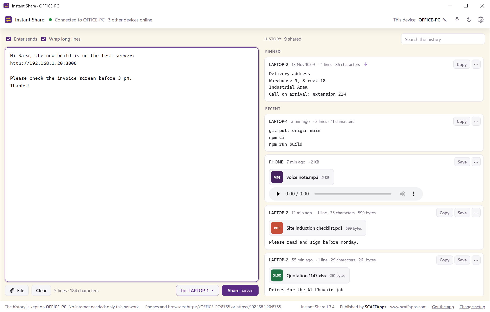
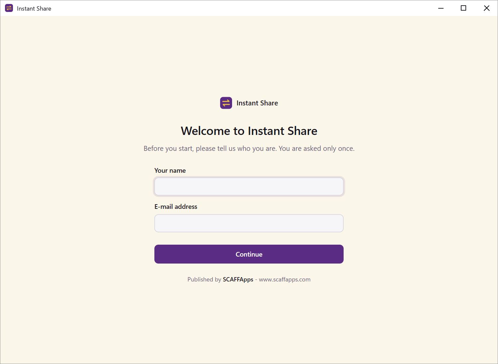
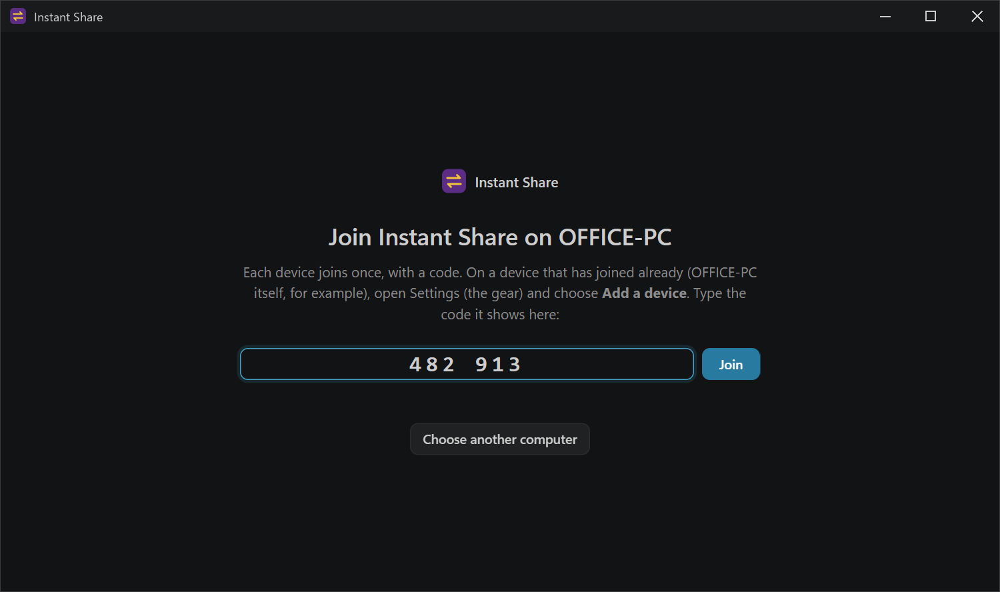
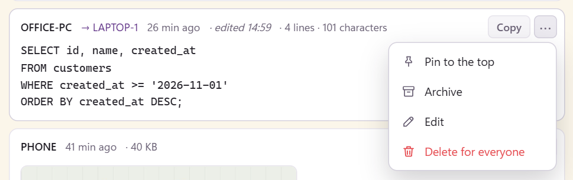
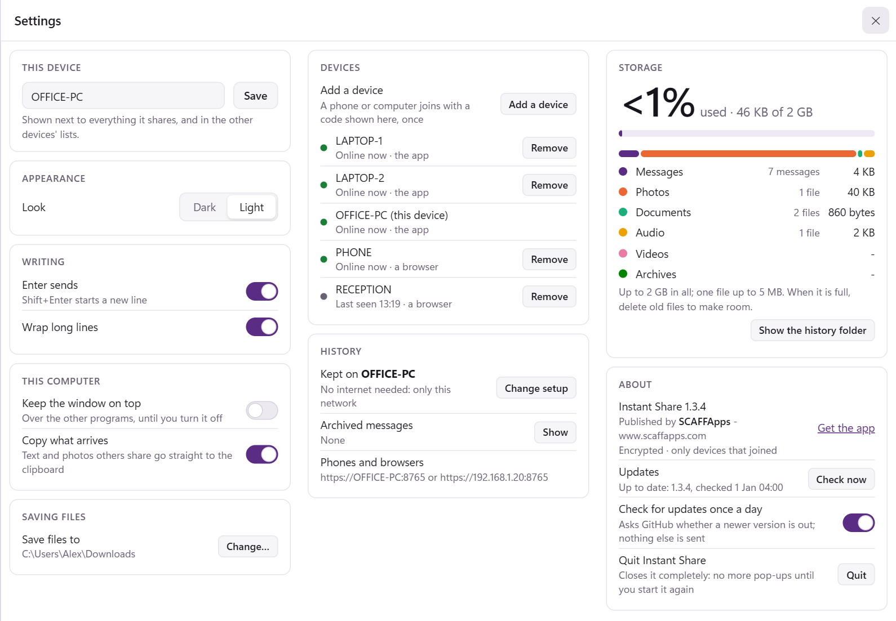
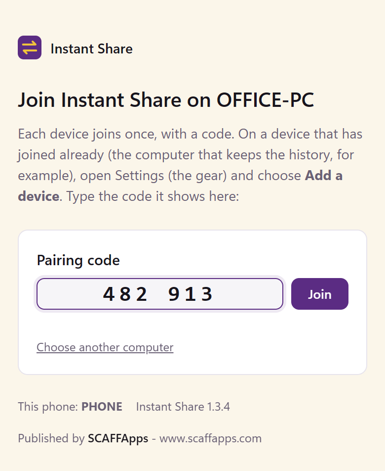
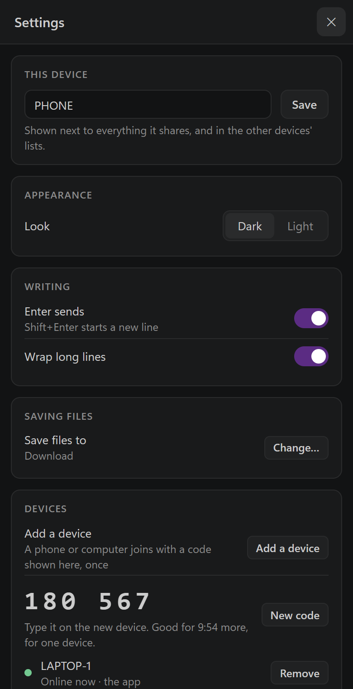
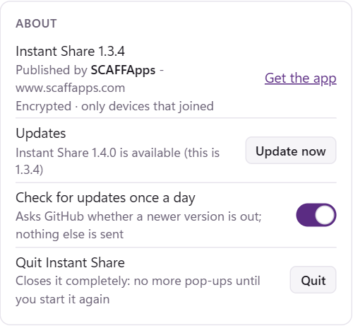

Instant Share passes things between the devices on your own network: commands, addresses, links, notes, code, a photo of a drawing, a quotation, a voice note. Anything you would otherwise e-mail to yourself, carry on a USB stick or type again.
One computer keeps the history. The other computers run the same app and connect to it; Android phones run Instant Share for Android. They find it on the network by themselves. Anything else, an iPhone or a computer without the app, uses a browser.
Share on one device and the others have it within a moment, with a notification and a Copy button. Choose who sees it; pin, archive or edit. Encrypted, and only for the devices that joined with a code. No accounts, and no internet needed.
LaptopThe Instant Share app
Android phoneInstant Share for Android
iPhone, tabletAny browser
→
The computer that keeps the historyThe Instant Share app · answers only your own network, encrypted, and only devices that joined · no internet needed
The SCAFFApps team

The light appearance: the sun or moon button switches it.
Instant Share handbook · Version 1.3
INSTALL
Chapter 01 · Installing and setting up
Install on each computer. One keeps the history.
One installer, for 64-bit Windows 10 and 11, on every computer. Instant Share installs for everyone on the computer, with its shortcut in the Start menu's SCAFFApps folder. Phones get the Android app.
DownloadInstant-Share-Setup-1.3.x.exe from the Releases page, or install it from the SCAFFApps Suite.
InstallWindows asks for permission once. It closes an older copy first.
Your name, onceThe first SCAFFApps app on a Windows account asks for your name and e-mail.
One questionIs this the computer that keeps the history, or does it connect to one?

The first start on a Windows account: your name and e-mail, asked once.
Then the one question, on a laptop: Instant Share has already found OFFICE-PC.
On one computerOne that stays on while you work: choose Use this computer. Windows asks whether to allow Instant Share on networks: allow it on Private networks.
On every other computerChoose that computer in the list, or type its name or address and press Connect.
Always readyLeave Start Instant Share when I sign in to Windows ticked.
Good to know
"Windows protected your PC" may show the first time: the installer is not code-signed. Choose More info, then Run anyway.
To change it later: Settings (the gear) > Change setup, or the tray icon's menu.
Coming from 1.2 (one file)? Run the installer once on each computer: it closes the old copy and keeps the history and settings.
Instant Share handbook · Install and set up
JOIN
Chapter 02 · Joining with a code
Six digits, once. Then it is yours.
Only devices that have joined can see the history or share. The computer that keeps it is joined from the start; every other computer, phone or browser joins once, with a code.
On a device that has joined: Settings > Devices > Add a device shows a code, and every device that has joined.
A codeOn a device that has joined (the computer that keeps the history, for example), open Settings > Devices > Add a device, or Add a device… in the tray menu. A 6-digit code appears, good for 10 minutes and for one device.
Type it on the new deviceWhere it asks for it, and press Join.

A laptop joining OFFICE-PC: the code shown there, typed here.
The code never travels
Both devices check it without sending it, so someone listening to the network learns nothing from it. Five wrong tries and the code stops working: make a new one.
Removing a device
Settings > Devices lists every device that has joined, with Remove to take one off (a lost phone, a computer sold): it sees nothing more until it joins again with a new code.
Instant Share handbook · Joining with a code
WINDOW
Chapter 03 · The window at a glance
Write on the left. Everything shared, on the right.
The editor is where you write or drop what to share; the history holds everything shared with this device, pinned items first.
The dark appearance (the usual one): the editor, and the history with a pinned item on top.
Part
What it does
Dot and status
Green: connected to the computer that keeps the history, with how many other devices are online. Red: it cannot be reached.
This device
The name shown next to everything it shares. Click it to change it.
Pin · sun or moon · gear
Keep the window on top · dark or light · Settings.
Part
What it does
Enter sends, Wrap
Enter shares at once (Shift+Enter: a new line); long lines fold to fit.
File, Clear · To, Share
Add a file, empty the editor · who should see it, and Share.
History
Pinned first, then the newest, with a search box.
Instant Share handbook · The window at a glance
SHARE
Chapter 04 · Sharing text and files
Write it, drop it. Press Enter.
Write or paste in the editor and press Enter, or Share. The editor empties, and the text is at the top of the history on every device that may see it.
A photo added, with a line about it, ready to share with LAPTOP-1 only.
TextShift+Enter starts a new line. With Enter sends off, Ctrl+Enter shares.
A filePress File, drag one from File Explorer onto the editor, or paste a picture with Ctrl+V. Text in the editor goes with it, as a caption; ✕ takes the file off again.
CheckedInstant Share checks what a file really is from its contents, not its name: programs, scripts and web pages are refused, even renamed.
What can be shared
In the history
Photos: PNG, JPEG, GIF, WebP, BMP, HEIC
Shown as pictures (HEIC as a file).
PDF
Opens in the PDF viewer.
Word, Excel, PowerPoint, OpenDocument, RTF, text, CSV
A file with its kind on it: Save it, then open it.
Audio: MP3, M4A, AAC, WAV, OGG, Opus, FLAC, AMR
A player, to listen right there (voice notes).
Short videos: MP4, MOV, 3GP · ZIP
A player · a file to save.
Up to 5 MB a file
Text can be up to 20 MB. Photos and videos from a phone are often bigger than 5 MB: share a smaller copy (most phones can send or save a photo smaller; a screenshot of it is usually well under 5 MB).
Instant Share handbook · Sharing text and files
WHO
Chapter 05 · Who should see it
Everyone, or only these.
The To button next to Share says who will see what you share. Click it to choose.
The devices Instant Share knows, with who is online now.
EveryoneEvery device, now and later. The usual choice.
Only some devicesTick them. The others will not see it, in the history or as a notification.
A green dot means the device is online: the app runs there, in its window or the tray, or a browser has the page open. Offline devices can be ticked too: they see it when they come back.
Your choice stays for the next share, and the button shows it: To: LAPTOP-1. In the history, such an item shows its devices after an arrow: → LAPTOP-1.
Locked, not only tidy
Each device is known by its own key from joining, so a device that was not chosen cannot see the item or open its file, even with its address.
Only its sender can edit or delete an item.

Sent to LAPTOP-1 only: OFFICE-PC's message shows → LAPTOP-1, and, as its sender, it may edit or delete it.
Instant Share handbook · Who should see it
HISTORY
Chapter 06 · The history
Copy it, keep it. Put it away.
Everything shared with this device, pinned items first, then the newest. Each item has its own buttons, and a ⋯ menu for the rest.
The newest items, under a pinned one: Copy, Save, and the ⋯ menu on each.
On each item
What it does
Copy
Copies the text. On a photo, in the apps, Copy photo copies the picture itself.
Save
Saves the file in the folder chosen in Settings (Downloads unless you change it) and shows it there.
⋯ > Pin to the top
Keeps it above everything else on this device. Unpin undoes it.
On each item
What it does
⋯ > Archive
Puts it away on this device (the others still have it). Undo shows for a few seconds.
⋯ > Edit
Only on what this device shared: change the text and Save; everyone sees it, marked edited.
⋯ > Delete for everyone
Only on what this device shared: it disappears from every device, after a question.
Swipe left on a phone or touch screen to archive an item quickly.
The archive: Settings > Archived messages > Show. Swipe left there, or ⋯ > Back to the history, to bring one back.
Search the history finds items by their text, their file name, or the device that shared them.
Photos open full size with a click; Show all opens a long item; new items glow briefly; Arabic and other right-to-left text reads right to left.
The history shows the newest 300 items, and every pinned one; search reaches all of them.
Instant Share handbook · The history
SETTINGS
Chapter 07 · Settings
All in one view. No scrolling.
The gear at the top right opens Settings, its parts side by side.

Settings on the computer that keeps the history.
Part
What it holds
This device
Its name, shown to the others.
Appearance · Writing
Dark or light · Enter sends, Wrap long lines.
This computer
Keep the window on top; Copy what arrives straight to the clipboard.
Saving files
Where Save puts files (the apps; browsers save their own way).
History · Devices
Which computer keeps it, and Change setup; the archive; the address for phones and browsers · add or remove devices.
Storage · About
What the history holds · the version, Get the app, Updates, Quit.
Storage
The history holds up to 2 GB. The bar shows by what: messages, photos, documents, audio, videos and archives, with how many and how big. When it is full, new shares are refused with a message: delete old files you shared to make room.
Instant Share handbook · Settings
NOTIFY
Chapter 08 · Notifications and the tray
Told at once. Always running.
When another device shares something with this computer, Windows shows a notification, with a sound, even when the Instant Share window is closed: who shared it, the text or the file's name, and the photo itself for a photo. It stays in the Notification Centre until you clear it.
The top of the window: the dot and status, this device's name, the pin that keeps the window on top, the appearance and Settings.
On the notification
What it does
Copy
Text: copies all of it. A photo: copies the picture. With Copy what arrives on, it is on the clipboard already.
Save
Any other file: saves it in the folder chosen in Settings; a second notification says where, with Show in folder.
Open, or a click
Opens the Instant Share window.
The tray icon
What it does
Click
Opens the window.
Right-click
Open Instant Share, Add a device…, Start with Windows, Change setup… and Quit Instant Share, which really stops it (also in Settings > About).
Not while it is in front
No notification shows while the Instant Share window is in front: the history shows new items itself.
Windows' own settings
Do not disturb keeps them out of sight (they still go to the Notification Centre); Settings > System > Notifications > Instant Share chooses banners, sounds, or none.
Running in the tray
Closing the window leaves it running: the computer that keeps the history goes on serving the others, and every computer goes on showing notifications.
Keep the computer that keeps the history awake
A computer that is asleep cannot share. On it, open Settings > System > Power & battery > Screen, sleep and hibernate, and set sleep to Never when plugged in.
Backing up the history
Everything shared, files included, is kept on the computer that keeps the history. To back it up or move it: quit Instant Share there, then copy its folder (Settings > Storage > Show the history folder).
Double-clicking Instant Share while it runs opens the running one. Keep the window on top (the pin, or Settings) keeps the window above other programs until you turn it off.
Instant Share handbook · Notifications and the tray
ANDROID
Chapter 09 · The Android app, and browsers
On the phone, the same.
Instant Share for Android does everything the Windows app does, with Android notifications, and takes shares from any other app.
Setting up: it finds OFFICE-PC.

Joining with the code.
The history on the phone.

Settings, as on a computer.
Install itCopy Instant-Share-1.3.x.apk to the phone, or download it there from the Releases page (or Get the Android app on the computer's page). Open it, allow installing from that source, then Install.
JoinTap the computer that keeps the history, then type a pairing code (chapter 02). Allow notifications and running in the background, once.
Share from any appTap Share there on a link, a text, a photo, a document or a voice note, and choose Instant Share: it lands in the editor.
iPhones and other browsers
They open the address in Settings > Phones and browsers, for example https://OFFICE-PC:8765. The first time, the browser warns about the connection's certificate (Instant Share makes its own): continue to the page, then type a pairing code and a name. Everything works except notifications.
Prefer the apps
The apps check, every time, that they talk to the very computer they joined. A browser cannot: it shows its warning for any certificate it does not know. Open the page only on your own network, by the address you were given.
Instant Share handbook · The Android app, and browsers
UPDATE
Chapter 10 · Updates
Always the newest. Never a fuss.
Settings > About > Updates says which version this is and whether a newer one is out. The history, settings and "start with Windows" stay as they are.

About, when a newer version is out. The version shown is an example.
Checked for youWith Check for updates once a day on, the apps ask GitHub once a day and say so in a notification when a new version is out. Check now asks at once. Only that question reaches the internet; nothing you share does.
Update now, on WindowsDownloads the new installer, checks it against the checksum published with it, and runs it with Windows' permission: Instant Share closes, is updated in place and opens again.
Update now, on AndroidDownloads the new app, checks it, and opens Android's installer; it installs over this one, keeping its setup.
All together
Update the computer that keeps the history together with the others: devices on different versions may not understand each other.
The SCAFFApps Suite
Installs, opens and updates Instant Share and the other SCAFFApps apps from one window.
Get the app
On Instant Share's page, it leads to the Releases page, for another computer or phone.
Instant Share handbook · Updates
PRIVACY
Chapter 11 · Privacy and security
Your devices only. Nothing else.
What keeps strangers out, and what Instant Share does not do for you.
Only devices that joined
A device joins once with a pairing code and gets its own secret key. Without one, nothing: not the history, not the list of devices, not a file, not a share. Remove takes a device off at once.
The code never travels
Both sides check it without sending it, so listening to the network reveals nothing. Someone pretending to be your computer gets one guess; the code allows five tries and lasts ten minutes.
Encrypted
Everything between the devices goes over https (TLS 1.2 or newer), with a key the computer that keeps the history makes for itself.
The apps check whom they talk to
An app remembers the computer's key when it joins and refuses any other, so a device pretending to be that computer is refused, with a message.
Locks that hold
Each request carries the device's own key: who should see it, only the sender edits and deletes, pins and the archive are enforced by the computer that keeps the history.
Stays on your network
It answers only devices on its own network, and nothing you share leaves it. Websites cannot reach the history; files are checked by their contents.
What it does not do
A browser cannot check the computer's key: it warns every time, so a fake page would look the same. Use the apps where you can.
The history is not encrypted on the disk of the computer that keeps it: protect that computer with a password, and BitLocker if you can.
Devices that joined are trusted: any of them can add or remove a device. Remove one you no longer use.
No expiry: items stay until their sender deletes them.
Passwords and keys
Instant Share keeps them safe from others on your network, but they stay in the history on the computer that keeps it. Delete such an item once you have pasted it where it belongs.
Instant Share handbook · Privacy and security
KEYS
Chapter 12 · Shortcuts and troubleshooting
The keys. The fixes.
Keys
What they do
Enter
Share (with Enter sends on); Shift+Enter starts a new line.
Ctrl+Enter or Ctrl+S
Share, always.
Ctrl+V in the editor
Pastes text, or adds a copied picture as the file.
Esc
Closes what is open: a question, a menu, a photo, the device list, Settings, the archive.
The top of the window when the computer that keeps the history cannot be reached.
What you see
What to do
Setup finds no computer
Instant Share must run on the computer that keeps the history, on the same network. Set that network to Private there (Settings > Network & internet), or type its numbered address. A VPN or a guest Wi-Fi can hide devices from each other.
It asks for a pairing code
This device has not joined yet, or was removed: Add a device on a device that has joined, and type the code.
"This is not the … this computer joined"
That computer shows another key. If Instant Share was set up again there, join it again; if not, someone may be pretending to be it: do not join.
The dot is red: "Can't reach…"
The computer that keeps the history is off or asleep, or Instant Share was quit there. Start it: the window reconnects by itself, and what you typed stays.
No notifications on Windows
Instant Share must be running (in the tray is enough), Do not disturb off, and Instant Share allowed in Settings > System > Notifications.
No notifications on the phone
Allow its notifications, and set its battery use to Unrestricted. The phone must be on the same Wi-Fi.
"The history … is full (2 GB)"
Delete old files you shared; Settings > Storage shows what takes the room.
"That kind of file can't be shared"
Only the kinds in chapter 04: a program on its own is refused (inside a ZIP is fine).
"Could not ask GitHub"
Checking for updates needs the internet; sharing does not. Try again later.
Need a hand?
Write to info@scaffapps.com with what you see and what you expected.
Say which version you have: Settings > About.
If Windows never asked to allow it
Allow it yourself, in a command window run as administrator on the computer that keeps the history:
Instant Share is one of the SCAFFApps apps: small, focused tools for people who work on a laptop all day. Each installs in a moment and keeps itself up to date.
Multi Screens
Smart Snap
Instant Share
SCAFFApps Suite
+And more to come
Every app, in one window.
The SCAFFApps Suite installs, opens and updates them all, and updates itself: one place to see which version you have and what is new. Get it, and every app, from github.com/Rady193.


 Multi Screens
Multi Screens Smart Snap
Smart Snap SCAFFApps Suite
SCAFFApps Suite